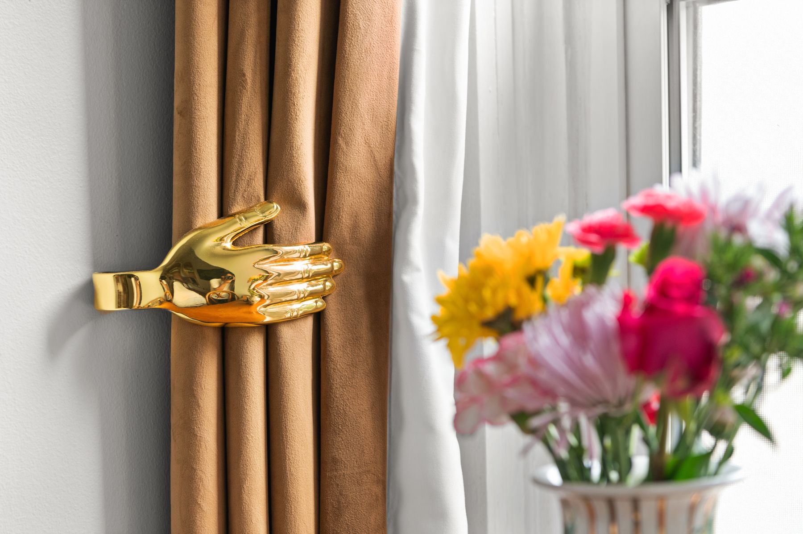

Our Story
Colombian color, Victorian bones.
[Her story in her voice — Colombian roots, how she fell for historic houses, why she lives in every project. 3–4 sentences.]
[One line connecting to Hosting Closet — the same eye, set at the table.]